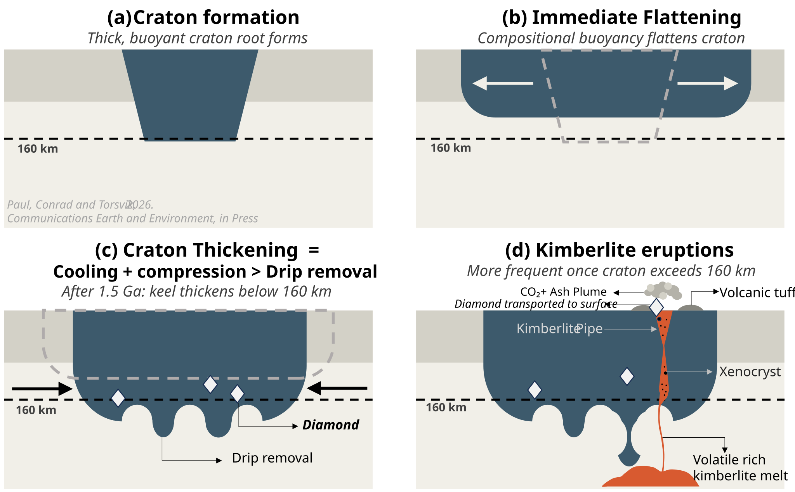
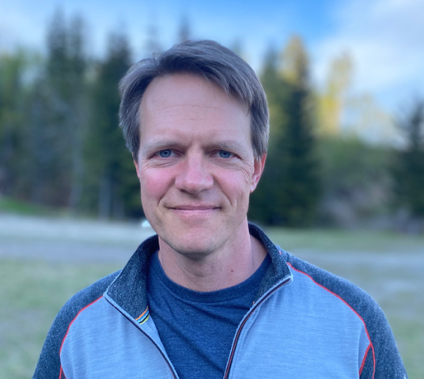
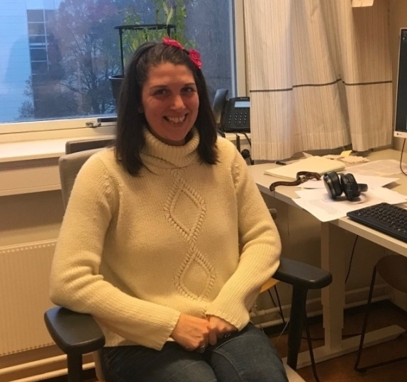

BALCONY
Cratons: understanding the dynamical changes behind their average stability

Project summary
Cratons, the stable interior part of Earth’s continents, are composed of ancient crystalline rock. Some cratons in Canada and Greenland have continental rocks dating back approximately 4 billion years. Although cratons have largely retained their 200-300-km thickness to the present with little internal deformation unlike other portions of the lithosphere (Earth’s two topmost layers), most cratons have experienced partial destruction.
With the support of the Marie Skłodowska-Curie Actions programme, the Balcony project will investigate the hypothesis that a newly identified self-compressive mechanism causes them to slowly but continuously regrow with time. Time-dependent numerical models will help evaluate the thinning and thickening mechanisms.
Objectives
- Examine the role of self-compression in craton thickening.
- Investigate the development of viscous anisotropy and grain size reduction at the base of cratons and their effects on craton thickness.
- Understand the mechanisms that have balanced craton thickness (self-compression, gravitational thickening, and viscous anisotropy) for billions of years and their geological implications.
Terms used on this page
- Craton
- The old, stable core of a continent.
- Lithosphere
- The rigid outer shell of the Earth, made of the crust and the uppermost mantle.
- Keel (cratonic root)
- The thick root of cold rock beneath a craton, reaching down into the mantle.
- Compositional buoyancy
- Buoyancy that comes from what the rock is made of, rather than from its temperature.
- Drip
- A blob of dense rock that peels off the base of the lithosphere and sinks into the mantle.
- Viscous anisotropy
- Viscosity that depends on direction: the rock flows more easily one way than another.
- Grain size
- The size of the mineral crystals in a rock. Smaller grains can make the rock softer under stress.
- Kimberlite
- A volatile-rich magma that erupts from deep in the mantle and can carry diamonds to the surface.
- Ga
- Billion years (giga-annum). "1.5 Ga" means 1.5 billion years.
Results
-
Cratons thicken again once cooling and compression outweigh drip removal
After about 1.5 billion years, the keel of a craton thickens below 160 km. Once the craton exceeds 160 km, kimberlite eruptions, which bring diamonds to the surface, become more frequent.
Publications
People
All three are at the Centre for Planetary Habitability (PHAB), University of Oslo.
-

Jyotirmoy Paul
-

Clint Conrad
-

Agnes Kiraly